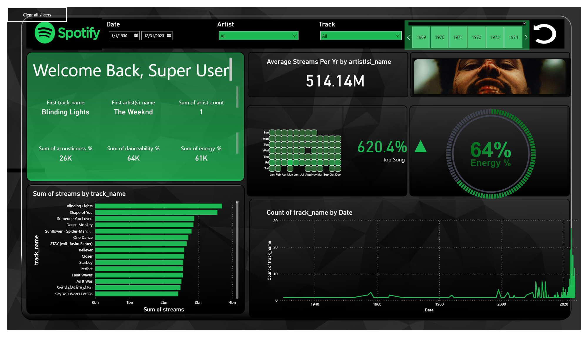
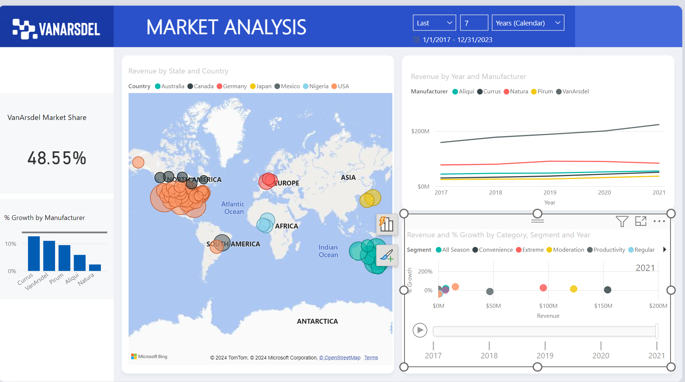

In this project I Utilized Kaggle's Spotify Top Songs dataset, cleaned with SQL. Integrated a date table via Power Query, fetched API data with Python. Designed Powerpoint backgrounds, HTML for cover art, and visualized insights with Power BI.

In this project, SQLServer was used to clean and preprocess a Nashville, TN housing dataset extracted from various sources. Techniques such as data deduplication, transformation, and normalization were applied to ensure data integrity and consistency for further analysis and visualization.
In this project, COVID-19 data was explored using SQL, analyzing trends, patterns, and correlations across various metrics such as cases, deaths, and testing rates. Data cleaning, aggregation, and visualization techniques were employed for comprehensive insights.

I will be creating and displaying my tableau projects on my tableau public page.

In this project my teachers at Tech901 created a database. We cleaned and did analysis on the data using SQL. The assingment was to connect to the database using SQLServer and a CSV file.
I had to show the top grossing movies for each director per year. To visualize this data, I used Chatgpt to pull links for the film art for each movie, and HTML to present the pictures.

This is a project sponsored by Microsoft through the partnership with Pragmatic Works. Dashborad in a day, in this cohort we went through every step in the power bi process.
we loaded, prepared, and cleaned the data. We modeled then explored the data. We visualized the data. We published and accesed the report, and we created user permissions.
This project was the last Capstone project for my final grade in my database management couse at Remington College. I created user logins, granted and revoked privileges. I unlocked accounts and dropped users from the system.